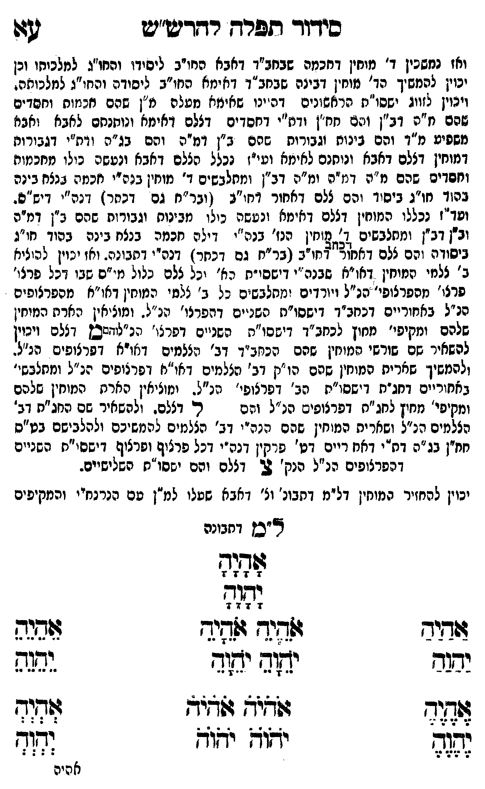

Neue Klartextfassung
[ואז ממשיכים ד' מוחין דחכמה שבכחב"ד דאבא חו"ב ליסודו וחו"ג למלכותו וכן יכוין להמשיך כד' מוחין דבינה שבכחב"ד דאימא חו"ב ליסודה וחו"ג למלכותה. ויכוין לזווג יססו"ת הראשונים דהיינו אימא מעלה מ"ן שהם חכמות וחסדים שהם מ"ה וב"ן והם חו"ן ורפ"ח דחסדים דצלם דאימא ומתכנסים לאבא ונעשה מהם מ"ד והם בינות וגבורות שהם ב"ן דמ"ה והם בג"ה וה"ג דגבורות דמוחין דצלם דאבא וניתנים לאימא וע"י נכלל צלם דאבא ומצטייר כולו מחכמות וחסדים שהם מ"ה דמ"ה ומ"ה דב"ן ומתלבשים ד' מוחין בנה"י חכמה בנצח בינה בהוד חו"ג ביסוד והם ל"ם דאחור דחו"ע (ועכ"ח גם דכתר) דזכ' דיש"ס. ועד"ז נכללו המוחין דצלם דאימא ונצטייר כולו מבינות וגבורות שהם ב"ן דמ"ה וב"ן דב"ן ומתלבשים ד' מוחין הנז' בקו' רישא בכ"א דתבונה בסוד חו"ג ביסודה והם ל"ם דאחור דחו"ב (ועכ"ח גם דכתר) דזכ' דתבונה. ואז יכוין להעלות ג' צלמי המוחין דחו"ב שבב' דיססו"ת הנז' כל צלם כלול מי"ס שבו דכל פר' מפרצופי הנ"ל ועומדים ומתלבשים כל ג' צלמי המוחין דחו"ב מפרצופים הנ"ל באחורים דכחב"ד דישסו"ת השניים דפנימי' הכלי' הנ"ל. ומוליכין הארת המוחין שלהם ומקיפי מחוץ לכחב"ד דישסו"ת השניים דזכ' מ' דצלם ויכוין להאיר שם שרשי המוחין שהם בכחב"ד דג' צלמים דחו"ב דפרצופים הנ"ל. ולהמשיך הארת מוחין שהם הו"ק דג' צלמים דחו"ב דפרצופים הנ"ל ומתלבשים באחורים דחג"ת דישסו"ת השניים דפרצופי הנ"ל. ומוליכין הארת המוחין שלהם ומקיפי מחוץ לחג"ת דפרצופים הנ"ל והם ל' דצלם. ולהמשיך הארת המוחין שהם הנה"י דג' צלמים למטה ולהכניסם בע"ס חו"ן נרנח"י דמ"ה ודת"ס דב"ן דכל פרצוף ופרצוף דישסו"ת השניים דפרצופים הנ"ל הנק' צ' דצלם והם יססו"ת השלישים. [?]] [יכוין להחזיר המוחין דל"ם דתבו' ודאבא שעלו למ"ן עם נרנח"י והמקיפים] [ל"ם דתבונה] אָהָיָהָ יָהָוָהָ === טבלה === [טור ימין] אַהַיַהַ יַהַוַהַ אֶהֶיֶהֶ יֶהֶוֶהֶ [טור אמצעי] אֹהֵיָהֵ אֹהֵיָהֵ יֹהֵוָהֵ יֹהֵוָהֵ אֹהֹיֹהֹ אֹהֹיֹהֹ יֹהֹוֹהֹ יֹהֹוֹהֹ [טור שמאל] אֵהֵיֵהֵ יֵהֵוֵהֵ אְהְיְהְ יְהְוְהְ === סוף טבלה ===
Original gegen neue OCR · Niqqud für Vergleich ausgeblendet
Original
[ואז ממשיכיםK146-001 ד' מוחין דחכמה שבכחב"דK146-002 דאבא חו"ב ליסודו וחו"ג למלכותוK146-003 וכן יכוין להמשיך כד' מוחיןK146-004 דבינה שבכחב"דK146-005 דאימא חו"בK146-006 ליסודה וחו"ג למלכותה.K146-007 ויכוין לזווג יססו"ת הראשונים דהיינו אימאK146-008 מעלה מ"ן שהם חכמותK146-009 וחסדים שהם מ"ה וב"ן והם חו"ן ורפ"חK146-010 דחסדים דצלם דאימא ומתכנסיםK146-011 לאבא ונעשה מהם מ"דK146-012 והם בינותK146-013 וגבורות שהם ב"ן דמ"ה והם בג"ה וה"גK146-014 דגבורות דמוחין דצלם דאבא וניתניםK146-015 לאימא וע"יK146-016 נכלל צלםK146-017 דאבא ומצטייר כולו מחכמות וחסדיםK146-018 שהם מ"ה דמ"ה ומ"ה דב"ן ומתלבשים ד' מוחין ∅K146-019 בנה"י ∅K146-020 חכמה בנצח בינה בהוד חו"ג ביסודK146-021 והם ל"ם דאחור דחו"ע (ועכ"חK146-022 גם דכתר) דזכ' דיש"ס. ועד"ז נכללו המוחין דצלם דאימא ונצטייר כולו מבינות וגבורות שהם ב"ן דמ"ה וב"ן דב"ן ומתלבשים ד'K146-023 מוחין הנז' בקו' רישא בכ"א דתבונה בסוד חו"ג ביסודה והם ל"ם דאחור דחו"ב (ועכ"ח גם דכתר) דזכ' דתבונה. ואז יכוין להעלות ג'K146-024 צלמי המוחין דחו"ב שבב' דיססו"ת הנז' כל צלם כלול מי"ס שבו דכל פר' מפרצופיK146-025 הנ"ל ועומדים ומתלבשים כל ג' צלמי המוחין דחו"ב מפרצופים הנ"ל באחורים דכחב"ד דישסו"תK146-026 השניים דפנימי' הכלי'K146-027 הנ"ל. ומוליכיןK146-028 הארת המוחיןK146-029 שלהם ומקיפיK146-030 מחוץ לכחב"ד דישסו"תK146-031 השניים דזכ' מ'K146-032 דצלם ויכוין להאירK146-033 שם שרשיK146-034 המוחין שהם בכחב"ד דג' צלמים דחו"ב דפרצופים הנ"ל. ולהמשיך הארת מוחין שהםK146-035 הו"ק דג' צלמים דחו"בK146-036 דפרצופים הנ"ל ומתלבשים באחורים דחג"ת דישסו"ת השניים דפרצופי הנ"ל. ומוליכין הארת המוחיןK146-037 שלהם ומקיפי מחוץ לחג"ת דפרצופיםK146-038 הנ"ל והם ל' דצלם. ולהמשיך הארתK146-039 המוחין שהם הנה"י דג' צלמים למטה ולהכניסם בע"ס חו"ן נרנח"י דמ"ה ודת"ס דב"ןK146-040 דכל פרצוף ופרצוף דישסו"תK146-041 השניים דפרצופיםK146-042 הנ"ל הנק' צ' דצלםK146-043 והם יססו"ת השלישים. ] [יכויןK146-044 להחזיר המוחין דל"ם דתבו' ודאבא שעלוK146-045 למ"ן עם נרנח"י והמקיפים] [ל"ם דתבונה]K146-046 אהיה יהוה === טבלה === [טור ימין] אהיה יהוה אהיה יהוה [טור אמצעי] אהיה אהיה יהוה יהוה אהיה אהיה יהוה יהוה [טור שמאל] אהיה יהוה אהיה יהוה === סוף טבלה ===K146-047
OCR · fehlbar
סידור תפרח רחרש"יש 4ל ואז נמשכיןK146-001 ד' מוחין דחכמה שבחב"דK146-002 דאבא המו"ב ליסידו והחו"ג למלכוחוK146-003 וכן יכוין להמשיך הד' נוחיןK146-004 דבינה שבחב"דK146-005 דאימא החו"בK146-006 ליסודה והחי"ג למלכוחה.K146-007 ויכוין לזווג ישסו"נז הראשזנים דהינו שאימאK146-008 מעלה מ"ן שהם חזננזוחK146-009 וחסדים שהם ז"ת דב"ן ויגמ חח"ן ודח"יK146-010 דחסדים דצלם דאימא ונוחנחםK146-011 לאבא ואבנ] משפיע מ"ךK146-012 והם 2ינוחK146-013 וגבורות שהם ב"ן דמ"ה והם בג"ת ודח"'K146-014 דגבורות דמוחין דצלם דאבא ונוחנםK146-015 לאימא ועי"זK146-016 נכלל הצלםK146-017 דאבא ונעשה בכולו מזכמות וזפדיםK146-018 שהם מ"ה דמ"ה ומ"ה דב"ן ומתלבשים ד' מוחין בגהיי חכמיה גנצח בינה גהזד חו"ג ביסוד והם צלם דאחור דח("ב ( ובר"ח גם דכחר.] -נה"י (-יש"פ. שד"ז נכללו המוחין דצלם דאימא ונטשה כולו מבינוח וגבורוח שרם ב"ן דמ"ה וב"ן דב"ן ומחלבשים זנ(ליחזן הנז'K146-019 בנה"י דיליהK146-020 חכמה בנצח בינה בהוד חו"ג ביסודיתK146-021 והם צלם דאחוץ' דחו"ב (בר"חK146-022 גם דכחר ]ץ דנה"י דתבונח- ואז ינוין להוציא ב' צלמיK146-023 מוחין דאו"א שבנה"י דיששי"ת קא' יכל צלם' נלול מ"ם שבו דבל פרצי' פרלו' מספרצופי' הג"ל ויורדים זמחלבש"ם כל ב'K146-024 צלמי המוחין דאו"א מהפרצופיםK146-025 הנ"ל באחוריים דכחב"ך דישסו"חK146-026 השניים דהפרנו'K146-027 הנ"ל. ומוציאיןK146-028 הארת המיחיןK146-029 שלהם ומקיפי'K146-030 מחוץ לכחב"ד דישסו"חK146-031 השניים דפרצי' תנ"ליזסכץK146-032 דצלם ויכיון להשאירK146-033 שם שורשי חנונזין שהם הכחב"ך דב' מצלמים דאו"א ופרצופים הנ"ל. ולהמשיך שאריתK146-034 המוחין שהם ∅K146-035 הו"ק דב' צלמים. דאו"אK146-036 דפרצופים הנ"ל ומחלבש'' באחוריים דחגיח דישסו"ח תב' דפרצופי' מנ"ל. ומוציאין. הארח הנזוחיןK146-037 שלהם ומקיפין מחיץ לחג"ח דפרצופישK146-038 הנ"ל ורם ר. דצלכ. להשאיר שם החג"ת דב' הצלמים הנ"ל ושאריתK146-039 המוחין שהם הנה"י דב' הצלמים להמשיכם ולהלבישם בט"ס חין בג"ה דח"י דאח ריים. דט' פרקין דנפ"יK146-040 דכל פרצוף ופרצוף. דישסי"תK146-041 השניים דנפרצופיםK146-042 הנ"ל הנק' 3- דזלםK146-043 והם ישסו"ת השלישיים. יכויןK146-044 להחזיר המוחין דל"מ דתבונ' וצ' דאבא ששנוK146-045 למ"ן טם הנרנחיי והמקיפים צייבץ דתבונה ש(קוד 7 ' 7 6 ודגה 7 74 7 4 דיש לשיש (לשיד ל(צה נבגב יאזד יאור ובשה לל ואיצ זזגיד וגוד גס( יזו ידוד וד[-K146-046 אהיה ∅K146-047